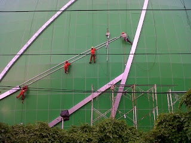

Semakin berkembangnya dunia pembangunan, maka hadir banyak material penambah yang melengkapi estetika sebuah banguanan. Tetapi, tidak hanya keindahan tapi juga keamanan bagi penghuni di dalamnya. Tidak halnya hadir beragam material kaca dan juga lantai yang kian melengkapi nilai estetika sebuah bangunan. Berikut sedikit penjelasan yang bisa anda baca mengenai sebagai rujukan and ajika akan membangun rumah maupun tempat usaha.
Tipe-variasi kaca diantara lain kaca tempered Dumai, kaca shower, railing kaca, kanopi kaca dan masih banyak lagi.
Jasa Pemasangan Kaca Tempered Dumai
Jasa pemasangan kaca tempered Dumai menawarkan solusi bagi Anda memiliki budget yang terbatas tetapi ingin mempunyai properti, entah itu gedung perkantoran, warung, atau rumah hunian yang mengaplikasikan kaca tempered Dumai. Kian banyak orang yang mau menerapkan kaca ini. Untuk komponen perkantoran, pintu, partisi, serta balkon umumnya terbuat dari kaca tempered Dumai. Sementara itu, untuk rumah hunian, komponen dari rumah seperti kamar mandi serta kanopi umumnya terbuat dari kaca tempered Dumai. Selain sembarang tukang juga bisa melaksanakan cara kerja pemotongan ini. Namun dulu hanya gedung perkantoran atau sentra perbelanjaan modern saja yang mengaplikasikan tipe kaca ini, sekarang rumah hunian juga sudah dibangun dengan kaca tempered Dumai. Selain ini tak lain karena semakin banyak orang yang memahami mutu serta keunggulan dari kaca tempered Dumai ini.
Jikalau itu, beragam komponen properti akan semakin menarik apabila dibuat dari kaca tempered Dumai seperti kanopi, pintu, kamar mandi, dan balkon.
Dengan mangunjungi dis.or.id, anda dapat mendapatkan dan memanfaatkan jasa kaca tempered Dumai yang pantas dengan kemauan anda. Harga untuk tiap pemasangan dijamin termurah dan hasil progres yang pantas dengan harapan anda. Disana anda dapat memanfaatkan jasa pemasangan kaca tempered Dumai untuk seluruh macam bidang ataupun bangunan. Tak dikala ini anda sedang berharap membangun suatu bangunan atau gedung, anda dapat memanfaatkan kaca tempered Dumai untuk dipakai langsung ke seluruh jenis bidang. Bila aman kaca tempered Dumai juga cakap memberikan kesan keindahan yang betul-betul baik dibandingi dengan kata macam lainnya. Anda bisa langsung mengunjungi dis.or.id untuk menerima berita mengenai jasa pemasangan kaca tempered Dumai, memakai kaca tempered Dumai dan pastinya hasil yang diberi malah akan sesuai dengan apa yang Anda inginkan.
Info Pemesanan Selengkapnya
Google Maps: https://www.google.com/maps/d/u/0/viewer?mid=1wHa3dBFC0jOCBS2FtlNAYKtIEp5M6KyQ&ll=-7.27380280025364%2C112.65243155000007&z=18
Note: https://www.facebook.com/notes/distributor-of-industrial-supply/kontraktor-jasa-pemasangan-kaca-tempered/1785713878395158/
Event: https://www.facebook.com/events/260234754508702/
Portfolio Produk: https://www.facebook.com/1681607345472479/photos/?tab=album&album_id=1712631995703347
Distributor & Supplier Kaca Shower
Anda pastinya meninginkan desain kamar mandi rumah layaknya kamar mandi hotel berbintang yang mengaplikasikan kamar kecil duduk serta dilengkapi shower maupun bath tub. Kecuali hal yang demikian kini bisa anda lakukan dengna mengaplikasikan kaca shower untuk kamar mandi anda. Tidak berharap lebih total lagi, kamar mandi yang menerapkan shower ini bisa dilengkapi dengan komponen lain yakni shower screen atau bisa disebut dengan kaca shower. Jadi sistemnya jauh lebih praktis sebab tidak perlu menyiapkan bahan sendiri untuk membikin sekat ruang.
Tidak anda sedang membutuhkan kaca shower, hal yang perlu anda lakukan merupakan mengunjungi dis.or.id. Anda bisa buktikan sendiri.
Distributor, Supplier & Jasa Pasang Kanopi Kaca
Pintu Kaca Shower pada kamar mandi adalah salah satu opsi yang baik untuk desain interior kamar mandi modern. Anda bisa memilih kanopi kaca yang sesuai dengan kebutuhan dan kemauan anda. Harga dari tiap kaca yang ditawarkan cukup beraneka tergantung kaca yang nanti akan digunakan. Jadi sudah tak heran lagi seluruh orang mau mencari harga yang amat kompetitif untuk menyesuaikan budget atau anggaran mereka masing – masing untuk membikin produk canopy kaca. Disinilah letak perbedaan optis yang utama antara akrilik (acrylic) dengan kaca. {Kalau tembus pandang, kaca meresap cahaya yang masuk sehingga kian tebal kaca maka kian sedikit sinar yang bisa melewatinya, karenanya sifat transparannya makin berkurang.|Di samping pintu kaca shower akan membikin kamar mandi kecil tampak lebih besar. Atap akrilik atau bisa juga disebut atap kaca acrylic ini banyak ditemukan di sebuah bangunan rumah, seperti ruko, apartemen, kafe, mall, sampai bangunan gedung.
Sekarang anda dapat menerima kanopi kaca dengan kwalitas terbaik dan juga berkualitas di dis.or.id. Terdapat banyak kanopi dengan berjenis-jenis ukuran dan ketebalan yang dapat anda pilih pantas dengan yang anda butuhkan. Anda juga dapat memenfaatkan jasa pemasangan atap kanopi kaca dengan segala tipe kaca yang anda butuhkan yang cocok dengan kriteria atap kanopi. Banyak bangunan seperti gedung perkantoran, perumahan, ruko dan apartement yang mengaplikasikan kanopi kaca tempered Dumai. Sekiranya fungsi utama kanopi sebagai pelindung untuk bangunan tersebut, pemasangan kanopi kaca juga dapat membuat bangunan menjadi nampak lebih indah dan menarik, apalagi mengaplikasikan konsep yang sama dengan konsep rumah minimalis. Tidak anda sedang mencari kanopi kaca, anda dapat seketika mengunjungi dis.or.id. Disana anda akan mendapat kanopi kaca yang cocok dengan berjenis-jenis ketebalan dan harga yang cukup relatif murah.
Jasa Maintenance Kaca

Jasa maintenance kaca menawarkan pelayanan perawatan bahan bangunan yang terbuat dari kaca. Kaca sungguh-sungguh membutuhkan perawatan karena setiap hari terkena cahaya sang surya atau juga hujan. Tak kaca tidak kusam, karenanya kaca semestinya dibersihkan secara regular. Dis.or.id mempunyai energi pakar yang dapat mampu membersihkan gedung pencakar langit yang bangunannya terbuat dari kaca. Membersihkan komponen kaca gedung Anda yang mungkin rusak, pecah, atau mengalami situasi sulit lainnya.
Sekarang juga hadir maintenance kaca untuk membersihkan kaca berbentuk melengkung. Lebih dari itu, Seandainya spesialis yang dimilik oleh dis.or.id juga dapat mengkoreksi kaca yang rusak.
Tidak anda sedang memerlukan jasa maintenance kaca, anda bisa seketika mengunjungi dis.or.id. Disana anda dapat memanfaatkan jasa maintenance kaca dengan daya spesialis yang kapabel membersihkan gedung kaca dengan produk pembersih kaca apa yang terbaik untuk menghilangkan kotoran dan kusam. Dis.or.id juga sudah mempersiapkan dengan berjenis-jenis alat yang dapat diterapkan untuk menjangkau segala sudut gedung, sekalipun gedung Anda sungguh-sungguh tinggi.
Distributor & Supplier Pintu Kaca
Pintu kaca yakni hal yang cukup penting dimiliki oleh sebuah bangunan. Tak cuma di gedung atau perkantoran, tapi pntu kaca juga bisa anda aplikasikan pada rumah agar sinar dapat seketika masuk pada ruangan dan memberikan suasana hangat. Ada juga pintu kaca dengan pigura dengan desain yang berbeda seperti folding dan sliding. Tenaga jenis kaca yang dapat Anda pilih untuk pintu kaca Anda seperti kaca tempered Dumai yang sedang booming atau kaca non-tempered yang harganya lebih terjangkau. Anda dapat pilih bahan untuk pigura yang Anda inginkan, apakah itu diciptakan dari aluminum atau dari kayu. Anda tinggal tentukan saja teladan pintu kaca seperti apa yang berkeinginan Anda miliki. Sekarang paling banyak diminati dikala ini yakni kaca tempered Dumai karena jauh lebih kuat dan bendung lama.
Dis.or id siap membantu anda untuk membuatkan pintu kaca idaman anda. Apabila pakar yang benar-benar profesional sehingga sungguh-sungguh siap untuk menghasilkan pintu kaca seperti apa yang berharap Anda miliki.
Anda dapat memilih kaca tempered Dumai yang sekarang ini sedang naik daun.
Jual Kaca Cermin

Kaca cermin sekarang mempunyai desain yang berbeda. Melainkan, Anda mesti memilih desain cermin yang unik, elegan, dan cocok dengan tema desain interior rumah Anda. Ada banyak sekali desain cermin yang dapat Anda pilih. Untuk bangunan bertingakat, terpenting digunakan pada ragam dinding kaca. Kini, cermin tidak hanya berbentuk persegi atau persegi panjang saja. Jadi, hanya terlihat transparan dari satu sisi saja. Malahan juga bagian tepi. Sementara itu, dikala diperhatikan dari luar, kaca ini reflektif. Artinya, Anda tidak dapat memperhatikan yang ada di dalam ruangan. Apabila itu, kadang kala cerminnya tidak ada framenya atau yang sering kali disebut dengan kaca cermin frameless.
Anda juga dapat tentukan apakah mau memiliki cermin yang mempunyai frame atau tidak. Banyak orang yang lebih suka dengan desain kaca cermin minimalis. Akan lebih menarik lagi apabila Anda mengaplikasikan kaca cermin ini sebagai bahan utama furniture. Tidak model lemari baju di mana bagian pintunya terbuat dari kaca cermin. Tetapi, Anda bisa memandang orang lain dari dalam rumah. Disana anda bisa menerima kaca cermin yang pantas dengan kemauan anda.
Jasa Pemasangan Railing Kaca
Sekarang railing kaca kini kian populer. Anda tidak cuma ditawarkan dengan contoh atau desain railing kaca yang sama. Malahan juga komponen pegangan atau piguranya. Pun aksesoris seperti pada pegangan tangga bahkan tidak terbuat dari bahan kayu lagi tetapi kaca dan aluminum. Dan kaca ini dapat Anda pakai sebagai bahan untuk membuat kaca railing. Pun juga bahan yang diterapkan.
Ada banyak pilihan ragam kaca yang bisa dipakai. Ada kaca tempered Dumai yang kini diminati banyak orang. Jika mendukung keamanan, railing kaca ini juga akan mempercantik desain interior rumah Anda. Dengan demikian, pecahan kaca tempered Dumai tidak akan melukai orang yang terkena pecahan. Tak anda dikala ini sedang memerlukan railing kaca untuk kantor, rumah dan daerah-daerah lainnya, anda dapat mengunjungi dis.or.id. Kini pasti, railing kaca ini menjadi opsi yang tepat.
Railing kaca dengan kualitas terbaik dapat anda dapatkan di dis.or.id. Dengan harga yang sangat terjangkau, anda dapat lantas menerima railing kaca yanag anda inginkan.
Jasa Pemasangan Kubikel Toilet

Kubikel kamar kecil mempunyai desain yang mewah dan elegan sehingga siapa saja yang memandangnya pasti akan tertarik, tak hanya itu kubikel kaca memberikan kesan bersih, rapid an tersusun. Kubikel WC dapat di pakai di WC mall.
Rumah sakit dan perkantoran. Banyak profit yang dapat di temukan dengan mengaplikasikan kubikel toilet diantaranya adala efisiensi, dimana dalam satu ruangan bisa menampung dan membuat banyak kamar mandi. Dengan memakai kamar mandi kubikel pada hunian maupun gedung yang anda miliki tentunya banyak kelebihan yang anda daptkan ialah harga kubikel yang lebih murah dibandingi dengan bahan konvensionel lainnya. Kaca sebagai penyekat dalam kamar mandi lazim disebut kaca shower. Kaca shower banyak digunakna sebab memberikan kesan mewah.
Seandainya anda berharap mempunyai kubikel WC ini, anda dapat mengunjungi situs dis.or.id.
Karena disana terdapat berjenis-jenis ukuran kubikel kamar mandi yang dapat anda jadikan opsi untuk hunian atau temap usaha anda. Kaca shower yang di jual di jamin kaca shower yang mempunyai mutu terbaik dan berkualitas tinggi.
Distributor & Supplier Pintu Lipat Kaca
Saat ini, opsi macam kaca beraneka dan bervariasi. Lalu, berapakah harganya? Anda mungkin menyangka bahwasannya kaca ini ditawarkan dengan harga selangit. Macam kaca nomor 6 ini sangat disarankan untuk dibuat sebagai bahan membuat pintu lipat kaca.
Muncul pertanyaan kenapa Patut memakai kaca tempered. Dengan demikian, sinar matahari di siang hari dapat masuk ke dalam ruangan. Dan dengan adanya pintu kaca ini, keamanan kian baik. Melainkan, pastikan Anda mengorder pintu kaca lipat yang dilengkapi dengan aksesoris yang berkualitas, dan yang terlebih aksesoris berupa hinges.
Distributor & Supplier Partisi Kaca
Telah banyak properti yang menggunakan bahan berupa kaca sebagai partisi. Anda dapat lihat di perbelanjaan modern, hotel, dan juga perkantoran. Biaya ini disebabkan banyak keunggulan dari partisi modern ini. Sebab memang biaya pembuatan partisi ini jauh lebih murah. Dalam hal ini, Anda tahu variasi kaca apa yang untuk partisi. Kecuali itu, tentukan juga desainnya apakah partisi kaca frameless (tanpa bingkai) atau dengan pigura. Selain itu, pertimbangkan juga privacy. Ini yang akan membikin Anda menetapkan hal yang tepat apakah Anda kaca transparan, semi transparan, atau kaca cermin. Alasan yang ketiga, partisi kaca ini menghabiskan space. Anda bisa partisi kaca ini sebagai penyekat sebagian ruangan seperti kamar mandi dalam, taman dalam ruangan, ruangan bermain di dalam rumah, dan lain sebagainya. Selain, Anda semestinya observasi kualitas kaca yang . Karena juga dengan kaca. Sebab kaca ini privacy ruangan yang disekat. Ada kaca transparan, semi transparan, dan juga kaca cemin yang membuat ruangan sangat privat. Jikalau anda sedang mencari distributor dan supplier partisi kaca yang kaca dengan mutu terbaik, anda tinggal mengunjungi dis.or.id.